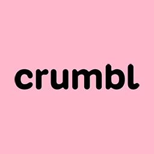

Crumbl Cookies Innovation Adoption Curve
| # | City | State | Opened | Website |
|---|
The Crumbl Chasm
Crumbl Cookies did not just scale a dessert brand. It created a generation of franchise operators who learned how to grow with a breakout concept early.
In the Innovation Adoption Curve, the most interesting group is often the Early Adopters. These are not the first experimental risk-takers, but they are early enough to see the opportunity before the rest of the market fully catches on.
For Crumbl, this group matters because they crossed the chasm with the brand.
They joined before Crumbl became obvious. They operated through the rapid-growth phase. And many saw the upside of backing a consumer concept before it became saturated.
That experience is powerful.
Once operators have early success with a fast-scaling franchise, they are more likely to look for the next brand with similar potential. Not because they are chasing trends, but because they understand the pattern: strong product, clear demand, operational simplicity, social buzz, and territory expansion.
There is also a practical reason. Crumbl's best markets are no longer widely available. For many operators, the path to opening more Crumbl locations may be limited, so the next logical move is portfolio expansion.
You can already see this behavior in the market. Early Crumbl franchisees have since expanded into other concepts — from fast-casual restaurants to emerging food and wellness brands — moving beyond single-unit ownership into broader multi-unit portfolios.
This is the real opportunity behind the chart.
The Early Adopter segment is not just a slice of Crumbl's historical growth. It may be one of the best audiences for the next wave of franchise development.
These operators have already seen what early momentum looks like. They know the value of getting in before a concept becomes crowded. And if Crumbl gave them their first major win, they may now be looking for the next one.
Call it the Crumbl Alumni Effect: a network of proven operators, shaped by one of the fastest-growing franchise stories of the last decade, now searching for the next brand to scale.